How to use every screen of the WearWise phone app and the researcher dashboard, step by step, with screenshots.
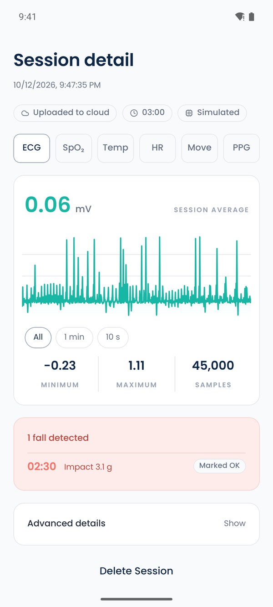
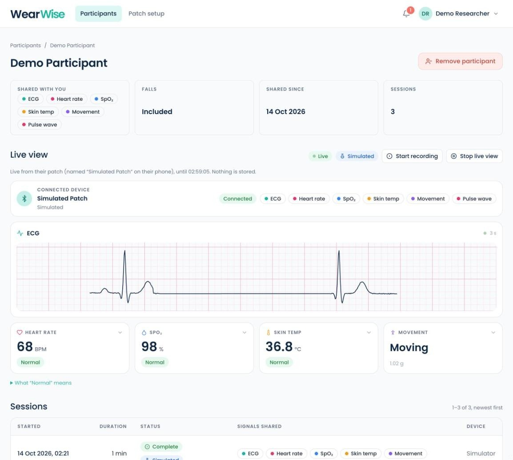
Handover release v1.0.0 · app 0.1.0 · firmware 0.9.6 October 2026 · WearWise Project Team Zakiul Atheef · Hari Bethelli · Siri Bethelli · Thevindu Kodagoda Munasinghage
Research prototype. Not a medical device.
Contents
Part 1
Getting to know WearWise
What WearWise is, who uses which part, and the words this guide uses.
1What WearWise is
WearWise is a research prototype for collecting wearable sensor data with the participant in control. It has three parts that work together:
1
The patch
A small sensor board worn on the body. It measures heart rate, blood oxygen (SpO₂), pulse wave, skin temperature, movement and ECG, and sends the readings to the phone over Bluetooth.
2
The phone app
Shows the readings live, records sessions, warns about a possible fall, and backs recordings up. The participant decides who can see what.
3
The web dashboard
Where a researcher or clinician sees the data a participant chose to share: sessions, charts, alerts and live view. It also installs firmware on patches.
How the parts connect. The patch talks only to the phone. The phone keeps every recording in an encrypted database on the phone and backs it up to the project's backend. The dashboard shows only what the participant shares.
Important: WearWise is not a medical device
Its readings are prototype sensor measurements and are not clinically validated. "Possible fall detected" means the movement looked like a fall. It can miss falls and it can raise false alarms. No emergency service or contact is ever alerted. Don't use WearWise to diagnose, treat or monitor any medical condition. If you feel unwell, contact a doctor or emergency services directly.
2Who uses what
Person
Uses
Can do
Participant
The phone app (and, optionally, the dashboard's My data pages)
Wear the patch, see live readings, record sessions, answer fall alarms, and decide who sees which signals. Can stop sharing at any time.
Researcher or clinician
The web dashboard
See participants who shared with them, open sessions and charts, download CSV files, receive alerts, watch live view while a participant allows it, and set up patches.
Administrator
The backend (see the Setup Guide)
Creates researcher and clinician accounts. Participants create their own accounts in the app.
3Words used in this guide
Patch / sensor
The WearWise sensor board. Its Bluetooth name looks like WearWise-6280.
Simulated patch
A pretend patch built into the app. It produces realistic test data, so you can try everything without hardware. Simulated data is always labelled Simulated.
Signal
One kind of measurement: ECG, heart rate, SpO₂, skin temperature, movement or pulse wave.
Session / recording
A stretch of time you chose to save, with the signals you picked.
Backed up
A copy of the session has been uploaded to the project's backend (the "cloud").
Share code
A one-time code, like AWWXK-59EF5, that a participant gives a researcher so they can see chosen signals.
Live view
A temporary mode in which a researcher can watch the readings as they arrive. Nothing is saved.
Part 2
The phone app
For participants. Screens are shown from an Android phone. iPhone looks the same.
4Signing in and creating an account
Sign in. Email and password, or Create Account.
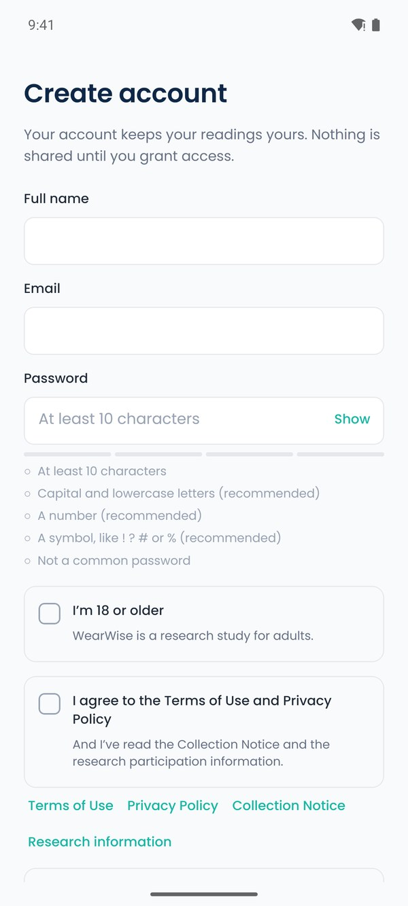
Create account. Name, email and a password.
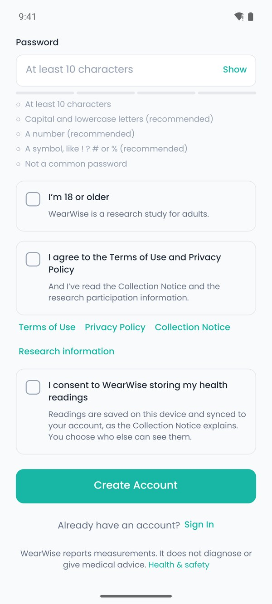
Agreements. Tick all three boxes to continue.
Create an account
Open WearWise and tap Create Account.
Enter your full name and email address.
Choose a password of at least 10 characters. The checklist under the box turns green as you go. Capital letters, a number and a symbol are recommended, and very common passwords are refused.
Tick I'm 18 or older. WearWise is a research study for adults.
Tick I agree to the Terms of Use and Privacy Policy. The links under the box open each document.
Tick I consent to WearWise storing my health readings, then tap Create Account.
Depending on how the study is set up, you may need to confirm your email address first: open the email WearWise sends and tap its link.
Forgot your password?
On the sign-in screen tap Forgot password?, enter your email and follow the link in the email you receive. The link works once and expires after an hour.
5Finding your way around
The bar at the bottom of the screen has five tabs. You can reach every feature from one of them.
Tab
What it's for
Home
Live readings from your patch, recording, recent alerts and this week's summary.
Alerts
Possible falls and readings that stayed outside the usual range.
Devices
Pair, connect, rename or forget a patch; use the simulation; Wi-Fi streaming; automatic backup.
History
Every session you recorded, with charts.
Profile
Your details, privacy and sharing, backup, password, notifications, documents and sign-out.
The bell at the top of Home opens your notifications. The circle with your initials opens your profile.
6The Home screen
Home is where you see your readings as they arrive. From top to bottom:
Sensor card. Which patch is connected and how. With no patch it says No sensor yet and offers Pair a device.
ECG strip. The last 3 seconds of your heart's electrical signal. LIVE shows it is updating.
Reading tiles. Heart rate (BPM), SpO₂ (%), skin temperature (°C) and movement (Still, Moving or Active). Each tile says Normal, Below normal or High.
What "Normal" means. Explains the reference ranges (table below).
Record. Starts a recording (section 8).
Alerts and This week. Your latest alerts, then minutes recorded, sessions and how many are backed up. Sync backs up now.
A tile shows a dash (—) and a short reason when there's no reading, for example Not connected or Finger on the sensor. Signals your patch doesn't have say so.
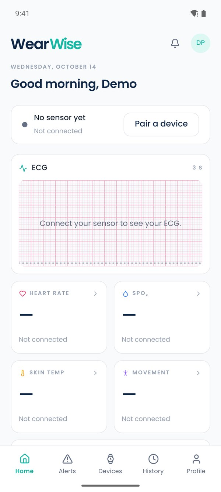
No patch connected yet.Live readings from a patch.
See more detail
Tap a tile (for example Heart rate) to open its chart under the ECG. Choose 30 s, 1 min or 5 min to change how much history it shows. Tap × to close it.
The reference ranges
Signal
"Normal"
An alert opens when…
Heart rate
60–100 BPM
below 60 or above 100 for 15 s
SpO₂
95 % or more
below 95 % for 15 s
Skin temp
31–37.5 °C
above 37.5 °C for 60 s
These ranges are general reference values for adults at rest, used to label prototype measurements. They are not a diagnosis. Skin temperature is lower than core body temperature.
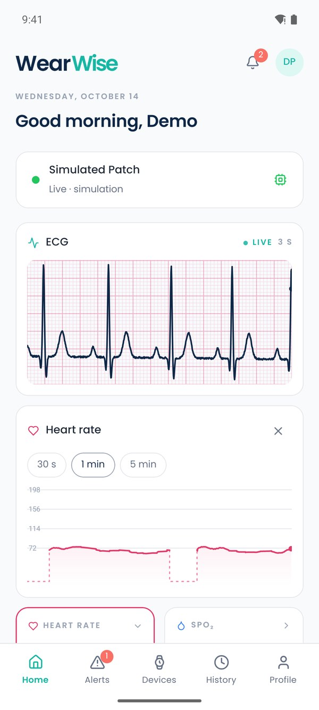
Heart rate opened, showing the last minute.
7Connecting your patch
Open the Devices tab. The first time, it says No devices yet and offers two buttons:
Pair a Device: connect a real WearWise patch over Bluetooth.
Use Simulation: use the built-in simulated patch. Use this to try the app, or on an emulator, which has no Bluetooth.
Pair a real patch
Switch the patch on and keep it near the phone. If the phone asks for Nearby devices or Bluetooth permission, allow it.
Tap Pair a Device. The app scans and lists every WearWise patch nearby by name, such as WearWise-6280, with its signal strength.
Tap CONNECT next to your patch. The name is on the patch's label.
When the phone asks for a PIN, type the 6-digit PIN printed on the patch's label. Android may suggest "0000 or 1234": ignore that and use the label PIN.
Pairing refused?
A patch accepts a new phone only when it has never been paired, or for 60 seconds after its BOOT button is pressed. Three wrong attempts lock pairing until BOOT is pressed. In the phone's Bluetooth settings, remove any old WearWise entry, press BOOT on the patch, then pair again.
Devices, before any patch.Two patches found while scanning (real phone).
Once connected
Your patch appears under Your devices with a Connected badge and three buttons:
Disconnect stops the connection. It changes to Reconnect.
Rename gives the patch a name you'll recognise.
Forget removes it from the app. Its past recordings stay in History.
If the connection drops, the app tries again on its own and continues the same recording.
Wi-Fi streaming (optional)
A real patch can also stream over Wi-Fi when the phone and patch are on the same network. Use Set up Wi-Fi on the Wi-Fi card. The patch supports 2.4 GHz networks only, and Bluetooth stays connected as a fallback. The simulation has no radio, so the card says Not available.
Automatic sync
Leave Automatic sync on to upload sessions whenever you're online.
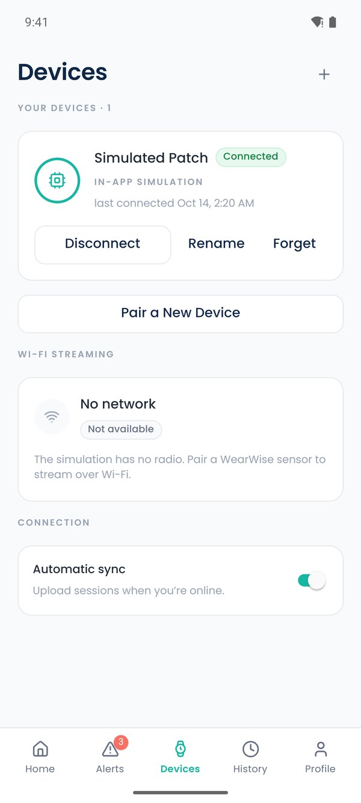
A connected patch (here the simulation).
8Recording a session
Live readings on Home are not saved until you record. A recording saves the signals you pick, on your phone first, then backs them up.
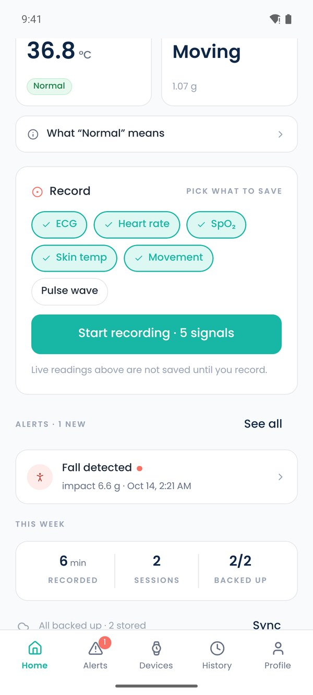
1. Pick what to save, then start.2. Recording. Timer, signals, samples and gaps.
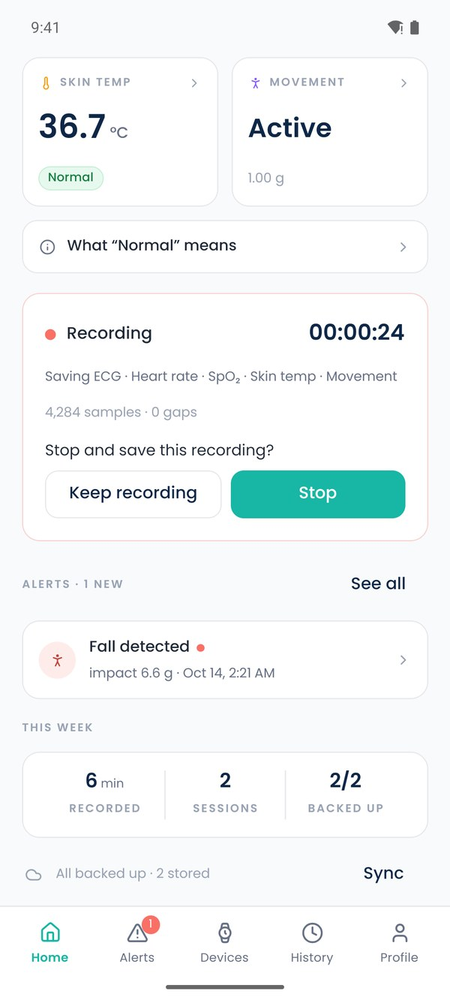
3. Stop and save. Confirm to finish.
Connect your patch (section 7) and scroll down Home to the Record card.
Under Pick what to save, tap the signals to include. Ticked chips are saved. Tap a chip again to leave it out.
Tap Start recording · N signals. A red dot and a timer show it is recording. Samples counts the readings saved and gaps counts any interruptions.
To finish, tap Stop recording, then Stop to confirm. Keep recording carries on.
The finished session appears in History. It's uploaded when you're online, and Home's This week card shows Backed up 2/2 when everything is safe.
Offline is fine
WearWise records normally without internet. Sessions wait as "not backed up" and upload by themselves once you're online again. To start it yourself, use Sync on Home or Back up now in Profile → Privacy & access.
9When a possible fall is detected
If the movement sensor sees a pattern that looks like a fall (a short drop, a hard impact, then stillness), the app shows a full-screen POSSIBLE FALL DETECTED card and sounds an alarm, even when the phone is on silent.
If you're fine, tap I'm OK. The alarm stops and the event is saved as Marked OK.
If nobody answers within 30 seconds, the event is saved as unanswered.
The card shows the strength of the impact in g, and SIMULATED when it comes from the simulation.
No one is called
WearWise does not contact emergency services, family or anyone else. A researcher you share falls with sees the event on the dashboard, but only when they're looking. Fall detection is a simple prototype rule and can be wrong in both directions.
Using the simulation?
The simulated patch includes a pretend fall about 12 seconds after it starts streaming (on connecting, and again when a recording starts or stops), then every 3 minutes, so you can practise. Just tap I'm OK.
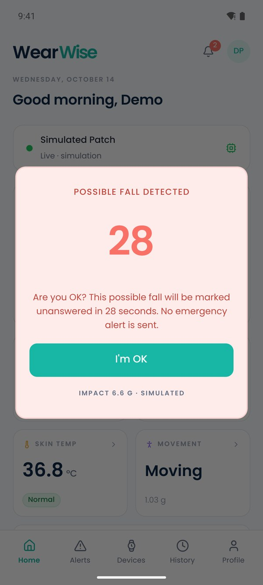
The possible-fall alarm with its 30-second countdown.
10Alerts
The Alerts tab lists, newest first:
Fall detected: every possible fall, with the impact, the time and whether it happened during a recording.
High / low readings: a heart rate, SpO₂ or skin temperature that stayed outside its range for the time in the table in section 6. One alert covers the whole time it stayed out of range and shows its peak.
A red dot marks alerts you haven't seen. The number on the tab icon counts them. Tap the bin icon to delete one alert, or Clear all to delete them all. How alerts work explains the rules in the app.
In Profile → Notifications you can also get alerts as phone notifications while WearWise is running, and choose whether a possible fall sounds an alarm.
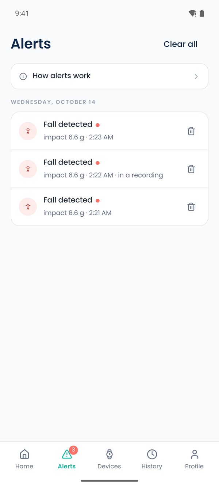
Three possible falls from the simulation.
11History and session details
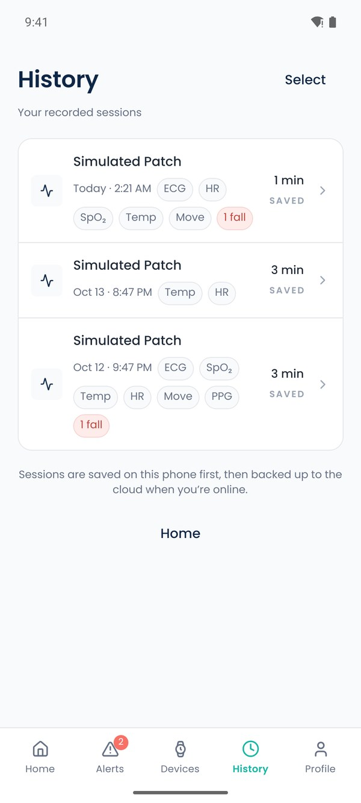
History. One card per session.Session detail. ECG for the whole session.
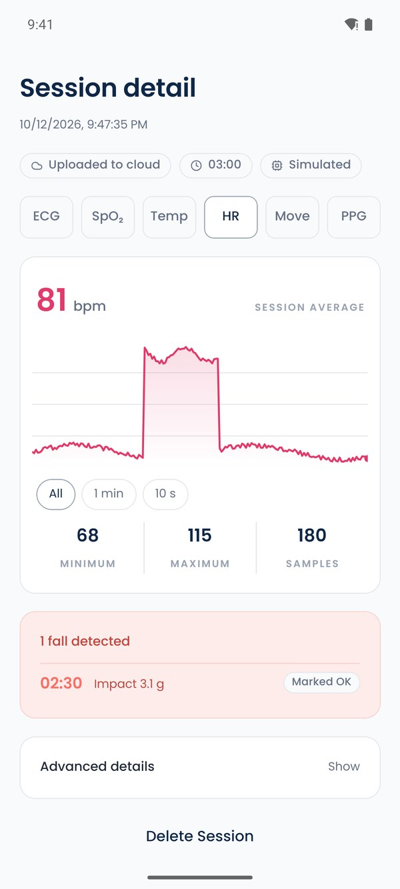
Heart rate tab of the same session.
History lists every session on this phone: the patch, date and time, signals saved, falls (if any) and length. Sessions are saved on the phone first, then backed up. Select lets you pick several sessions at once.
Tap a session to open it:
Badges at the top show whether it's Uploaded to cloud, how long it is, and whether it's simulated.
The large number is the session average. Below the chart, All, 1 min or 10 s zooms the chart. Minimum, Maximum and Samples summarise the signal.
Falls during the session are listed with the time into the session, the impact and the answer (for example Marked OK).
Advanced details shows technical information about the recording.
Deleting a session
At the bottom of a session, tap Delete Session. WearWise asks first, because a deleted session is removed from this phone and from the cloud backup, and can't be undone. Tap Delete to confirm or Keep to cancel.
A researcher you shared with also stops seeing a deleted session.
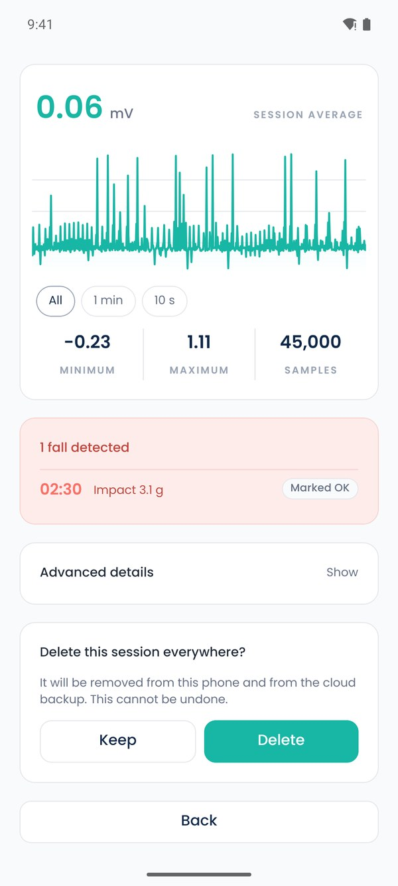
Deleting asks for confirmation.
12Profile and settings
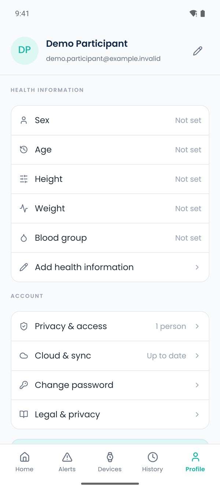
Profile. Your details and health information.
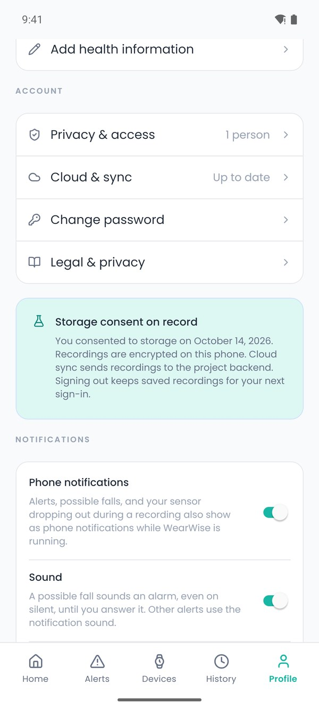
Account and notifications, further down.
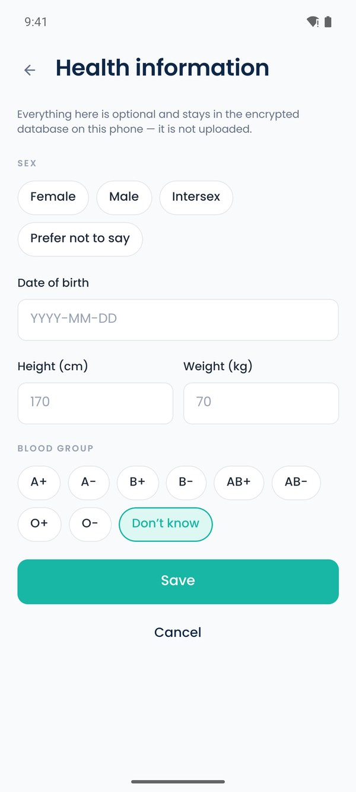
Health information. Optional; stays on the phone.
Name and picture
Tap the pencil next to your name to change your name or profile picture.
Health information
Sex, date of birth, height, weight and blood group. All optional. It is stored only in the encrypted database on your phone and is not uploaded.
Privacy & access
Who can see your data, sharing codes, live view and backup status (sections 13 and 14).
Cloud & sync
Whether everything is backed up (Up to date).
Change password
Enter your current password, then a new one (10+ characters).
Legal & privacy
The Terms of Use, Privacy Policy, Collection Notice, research information and health & safety notes, and at the end the team who made WearWise and its licence.
Storage consent on record
The date you agreed to WearWise storing your readings.
Notifications
Phone notifications: show alerts and patch drop-outs as notifications while WearWise is running. Sound: a possible fall sounds an alarm, even on silent, until you answer it.
Appearance
Turn on the dark appearance if you prefer it.
Export all my data / Request account deletion
Opens an email to the study's privacy contact so they can act on your request (or the privacy policy, if no contact has been set up).
Sign out
Asks first. Your saved recordings stay on this phone for your next sign-in.
13Sharing your data with a researcher
Nobody can see your recordings until you share them. You decide who, which signals and whether falls are included, and you can change or end it at any time. Sharing is done with a one-time share code.
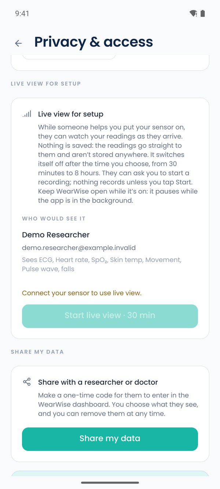
Privacy & access → Share my data.
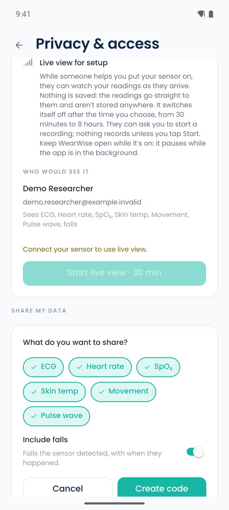
Choose the signals and whether to include falls.Your code. It works once, for 24 hours.
Go to Profile → Privacy & access and scroll to Share my data.
Tap Share my data. Under What do you want to share?, tick the signals the researcher may see. Turn Include falls on or off.
Tap Create code. Your code appears, for example AWWXK-59EF5. It works once and expires after 24 hours.
Tap Copy or Share and give the code to the researcher. They enter it on the dashboard (section 17). Then tap Done.
Only give the code to someone you trust
Once they enter it, they can see your name and your backed-up sessions for the signals you chose (not your email), until you remove them. The code is shown only once. Making a new code cancels an unused one.
See and change who has access
People with access lists everyone you share with: their name, email, role, since when, and what they can see.
Change picks different signals for that person.
Remove access ends their access straight away.
While a code is waiting to be used, a card says A share code is waiting to be used, with Make a new code and Cancel code.
Only backed-up sessions are shared
People you share with see sessions once they're backed up to the cloud, not recordings that are only on your phone.
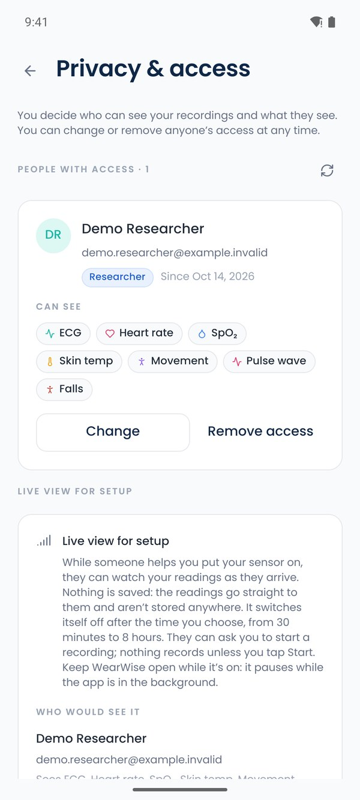
One researcher can see seven signals.
14Live view (for setting up the patch)
Live view lets a researcher you already share with watch your readings as they arrive, for example while they help you put the patch on. Nothing is saved: readings go straight to them and aren't stored anywhere. It switches itself off after the time you choose.
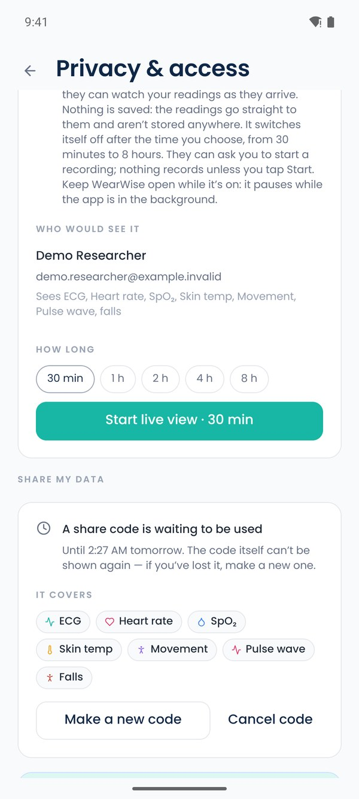
Choose how long, then start.
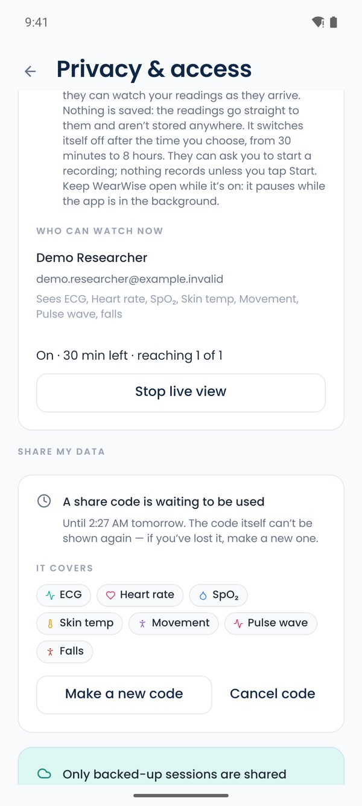
Live view on. Time left and Stop.
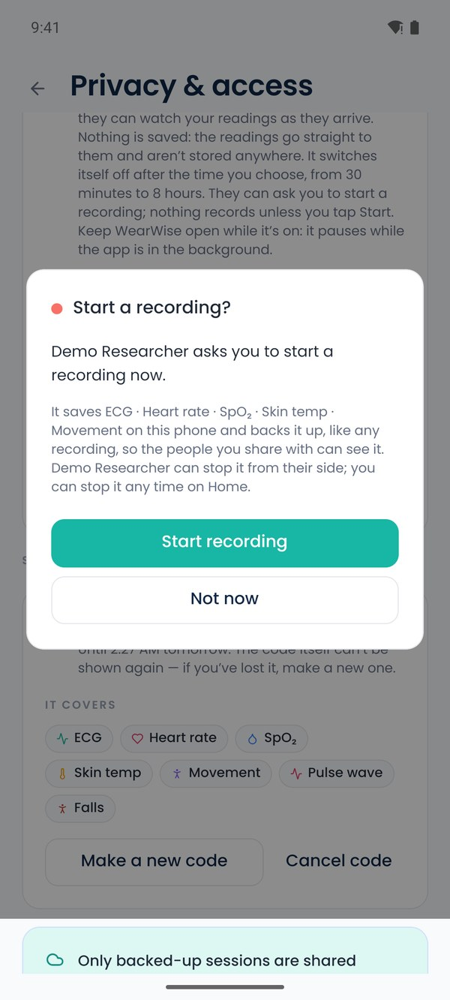
A recording request from the researcher.
Connect your patch. Until you do, the button says Connect your sensor to use live view.
In Profile → Privacy & access, find Live view for setup. Under Who would see it you can check who will be watching.
Under How long, choose 30 min, 1 h, 2 h, 4 h or 8 h, then tap Start live view.
Keep WearWise open. Live view pauses while the app is in the background. Home shows a banner with the time left.
Tap Stop live view at any time. The researcher can also stop it from their side.
Recording requests. During live view the researcher can ask you to start a recording. A card explains what would be saved. Tap Start recording to agree or Not now to decline. Nothing records unless you tap Start, and you can stop the recording on Home at any time.
Part 3
The web dashboard
For researchers and clinicians, in any modern browser on a computer. (Patch setup needs Chrome or Edge.)
15Signing in
Open the dashboard address your project gave you and sign in with your email and password.
Researcher and clinician accounts are set up by a WearWise administrator.
Participants can sign in with the same email and password as the app. They see their own data (section 22).
Forgot password? Under the password box, click Forgot password?, enter your email and click Send reset link. The link in the email works once and expires after an hour.
Participants. Everyone who has shared data with you, what they share, since when, how many sessions and the latest one.
After signing in you land on Participants. You see only people who gave you a share code, and only the signals each of them chose. A Falls chip means falls are included. Click a name to open that participant. The ⋯ menu at the end of a row has Open and Remove participant, which ends your access.
17Adding a participant with a share code
Ask the participant to create a share code in their app (section 13).
On Participants, click + Add participant.
Type the code. Capitals, dashes and spaces don't matter. Click Add participant.
The participant appears in the list straight away, with the signals they chose.
"Invalid or expired code"?
A code works once, lasts 24 hours, and a newer code replaces an unused one. Ask for a new code. After 10 wrong tries in an hour, adding is paused for that hour.
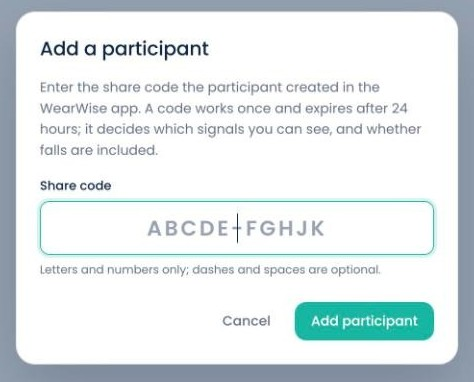
Enter the participant's share code.
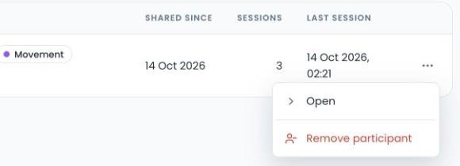
The row menu: Open or Remove participant.
18A participant's page and live view
Participant page with live view on. The summary (signals shared, falls, since when, sessions), then the live ECG and reading tiles while the participant allows it.
The top of the page summarises the sharing. When the participant has live view on, the Live view card shows their connected patch, the live ECG and the reading tiles, labelled Live (and Simulated for simulated data). The text under the title says until when, and that nothing is stored.
Start recording sends the participant a request. Nothing records unless they tap Start on their phone. While it records, Stop recording ends it. The session appears under Sessions once it's backed up.
Stop live view ends live view for both of you.
Remove participant (top right) ends your access.
When live view is off, the card says the readings will appear once the participant switches on Live view for setup in their app. If their app goes to the background, it shows Paused until they open it again.
19Sessions, falls and charts
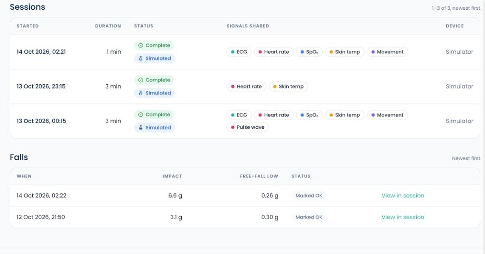
Sessions and Falls, further down the participant page: each session's start, length, status and signals, and every fall with its impact and answer.
Further down the participant page, Sessions lists each backed-up session with its start time, length, status (Complete, Simulated), the signals shared and the device. Falls lists possible falls with the impact, the lowest reading during the drop (free-fall low) and the participant's answer. Click a session, or View in session, to open it.
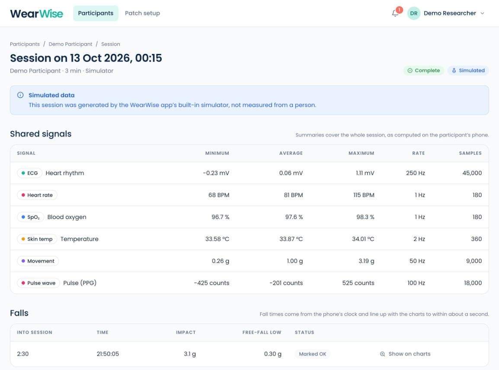
Session detail. A banner marks simulated data. The table summarises each shared signal over the whole session.
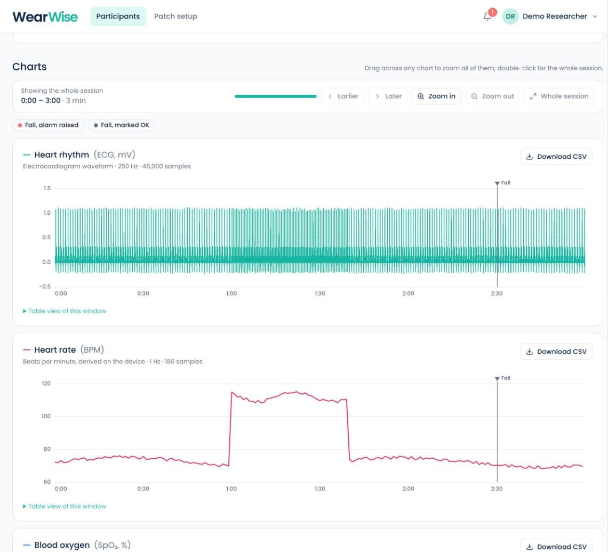
Charts. All charts share one time axis. The vertical line marks the possible fall.
Using the charts
Zoom: drag across any chart to zoom all of them to that time. Double-click to see the whole session again. The buttons do the same: Earlier, Later, Zoom in, Zoom out, Whole session.
Falls appear as vertical markers. Show on charts in the Falls table jumps to one.
Download CSV on each chart saves that signal as a spreadsheet file.
Table view of this window shows the numbers behind what's on screen.
Summaries are computed on the participant's phone over the whole session. Fall times come from the phone's clock and line up with the charts to within about a second.
20Alerts
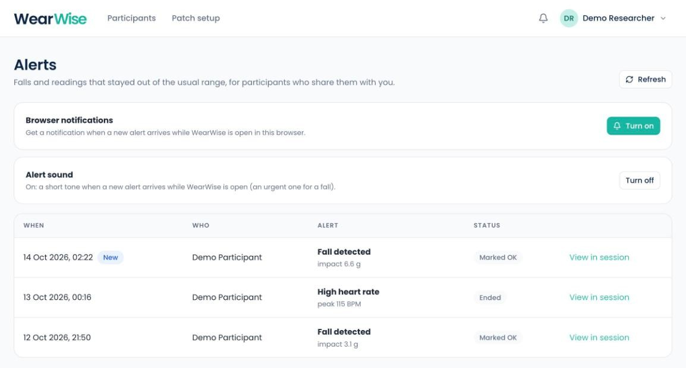
Alerts. Falls and readings that stayed out of range, for participants who share them with you.
Click the bell in the top bar to open Alerts. New alerts are marked New. Status shows how a fall was answered (Marked OK or unanswered) or whether an out-of-range reading has Ended. View in session opens the moment in its session.
Browser notifications: click Turn on to get a notification when a new alert arrives while WearWise is open in that browser.
Alert sound: a short tone for each new alert, and an urgent one for a possible fall. Browsers block sound until you've clicked the page once.
Refresh reloads the list.
The dashboard is not a monitoring service
Alerts appear only while someone is looking at the dashboard. Nothing is sent by SMS or call, and nobody is on watch.
21Patch setup and your account
Patch setup installs firmware on a patch over USB and gives it the PIN printed on its label.
Patch setup (top bar) prepares a patch for a participant: plug it in with a USB data cable, click Connect patch, then choose Set up for a new patch, Update for new firmware, or New PIN for a new participant. Print the PIN on the patch's label. It only works in Chrome or Edge. The full steps are in the WearWise Setup Guide.
Your account menu
Click your name at the top right to see your role and:
Theme:System, Light or Dark.
Change password: enter your current password and a new one twice. The checklist shows the rules.
Sign out.
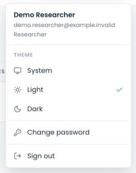
The account menu.
22The dashboard for participants
Participants can sign in to the dashboard with their app account to see their data on a bigger screen. They get two pages:
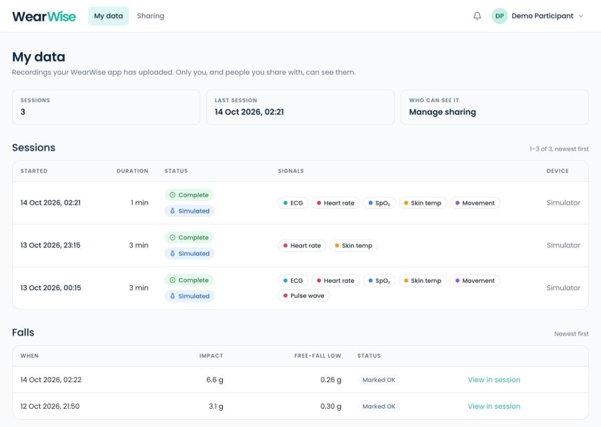
My data. Your backed-up sessions and falls. Only you, and people you share with, can see them.
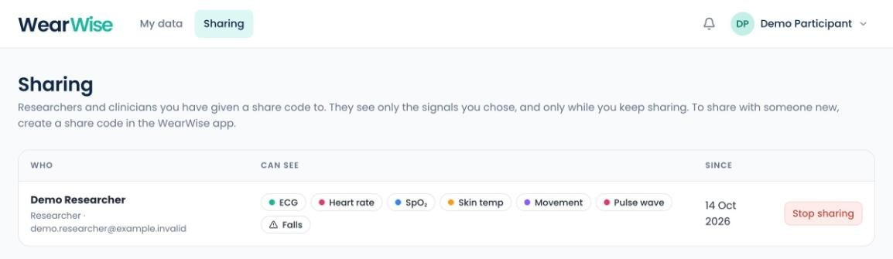
Sharing. Who can see your data and which signals. Stop sharing ends their access straight away. New share codes are made in the app.
Part 4
Help
Your privacy at a glance, and what to do when something doesn't work.
23Your privacy at a glance
Recordings are kept in an encrypted database on your phone and work fully offline.
Finished sessions are backed up to the study's backend so they aren't lost with the phone.
Health information you add to your profile stays on your phone.
Nobody sees your data until you give them a share code. They see only the signals you chose, only while you keep sharing.
Either side can end sharing at any time: Remove access in the app, or Stop sharing / Remove participant on the dashboard.
Live view saves nothing and switches itself off.
The patch never connects to the internet itself. Only your phone does.
24Troubleshooting
Problem
What to do
The app says the backend isn't configured
This is a setup problem, not something you did. Tell the person who installed the app (Setup Guide, Troubleshooting).
No patch found when scanning
Check the patch is on and close by. Allow Nearby devices / Bluetooth. Close WearWise on any other phone: a patch talks to one phone at a time.
"The patch didn't accept this device"
Remove the old WearWise entry in the phone's Bluetooth settings, press BOOT on the patch, and pair again within 60 seconds, typing the label PIN.
A third phone or tablet can't pair
A patch remembers two devices. Press BOOT and pair: the oldest is replaced.
Heart rate about double at first, or SpO₂ around 80 %
Hold still for 10–20 seconds with steady, light finger pressure. Prototype modules can read poorly before settling.
ECG says "leads off"
An electrode isn't touching the skin. Check the electrodes and the lead colours.
The fall alarm keeps appearing with the simulation
That's on purpose (section 9). Tap I'm OK.
A session stays "not backed up"
Check your internet connection, then Back up now in Profile → Privacy & access.
The researcher can't see my sessions
Only backed-up sessions are shared. Also check that the code was used within 24 hours, and that you didn't make a newer code.
The live view button is greyed out
Connect your patch first.
The researcher sees nothing in live view
Live view is off, its time ran out, or WearWise is in the background (it pauses). Start it again and keep the app open.
Wi-Fi streaming never starts
Use a 2.4 GHz network. Bluetooth carries the data anyway.
The dashboard plays no alert sound
Click anywhere on the page once. Browsers block sound until you do.
Can't see Participants or Patch setup on the dashboard
Those pages are for researcher and clinician accounts. Ask the administrator.
25Safety notes
Please read
WearWise is a research prototype. It is not a medical device, and its readings are not clinically validated.
"Possible fall detected" can be wrong, and real falls can be missed. Nobody is alerted outside WearWise.
Never rely on WearWise in an emergency. Call emergency services directly.
ECG electrodes on a person: the patch must run on a battery or USB power bank, never on a mains-powered computer or charger.
Stop wearing the patch if it irritates your skin, gets hot, or is damaged.
Made by the WearWise Project Team
Zakiul Atheef
Project Lead, Scrum Master, Technical Lead, Security Engineering Lead and Integration Lead
Hari Bethelli
Cloud & Data Engineer
Siri Bethelli
UI/UX & Data Visualisation Engineer
Thevindu Kodagoda Munasinghage
Security Engineer, Documentation Lead and QA & Testing Lead
WearWise User Guide · handover release v1.0.0, October 2026. Screens show synthetic demo data. Security practices are informed by relevant guidance; nothing about WearWise is certified.